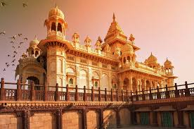

Situated in the western part of India, Rajasthan is a state renowned for its majestic palaces, vibrant culture, and timeless desert landscapes. Here's a glimpse into what makes Rajasthan a captivating destination:
Rajasthan is home to some of India's most magnificent forts and palaces, showcasing the grandeur and opulence of its royal past. Explore the iconic Amber Fort in Jaipur, with its intricate architecture and panoramic views of the surrounding hills.
Marvel at the majestic Mehrangarh Fort in Jodhpur, perched on a rocky cliff overlooking the blue city, and visit the sprawling City Palace in Udaipur, a masterpiece of Rajput architecture surrounded by serene lakes.
Immerse yourself in the vibrant cultural tapestry of Rajasthan, where age-old traditions and customs are preserved with pride. Experience the colorful festivals of the state, including the vibrant Pushkar Camel Fair, the dazzling Jaipur Literature Festival, and the spirited Gangaur festival celebrating marital bliss.
Witness traditional art forms such as Rajasthani folk music and dance, including the energetic Ghoomar and Kalbelia dances, which showcase the rich cultural heritage of the region.
Explore the enchanting Thar Desert, the "Great Indian Desert," which covers a significant portion of Rajasthan. Embark on a desert safari to witness the golden sand dunes, traditional villages, and camel caravans traversing the vast expanse.
Experience the rustic charm of desert life with a stay in a luxury tented camp or a heritage haveli, where you can enjoy cultural performances, traditional Rajasthani cuisine, and starlit nights under the desert sky.
Rajasthan is renowned for its exquisite handicrafts, including colorful textiles, intricately carved wooden furniture, and sparkling gemstones. Explore local markets and artisan villages to admire and purchase authentic Rajasthani handicrafts, perfect as souvenirs or gifts.
Witness the traditional art of block printing, tie-dyeing, and embroidery, which adorn textiles such as Bandhani sarees, Jaipuri quilts, and embroidered wall hangings, showcasing the skilled craftsmanship of Rajasthan's artisans.
Indulge in the royal cuisine of Rajasthan, known for its rich flavors and aromatic spices. Savor traditional dishes such as Dal Baati Churma, Laal Maas, and Gatte ki Sabzi, served with fragrant rice and crispy papad.
Experience the legendary hospitality of Rajasthan with a stay in a heritage hotel or palace, where you can relive the splendor of the bygone era and enjoy impeccable service fit for royalty.
Whether you're fascinated by majestic forts, intrigued by vibrant culture, or drawn to the timeless beauty of the desert, Rajasthan offers a myriad of experiences waiting to be explored. Plan your journey to this regal state and immerse yourself in the splendor and heritage of Rajasthan.
